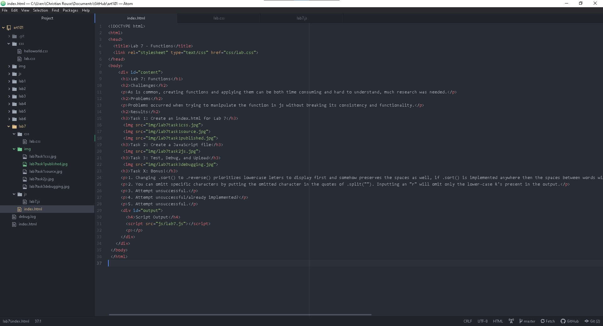

Lab 7: Functions
Challenges
As is common, creating functions and applying them can be both time consuming and hard to understand, much research was needed.
Problems
Problems occurred when trying to manipulate the function in js without breaking its consistency and functionality.
Results
Task 1: Create an index.html for Lab 7
Task 2: Create a JavaScript file
Task 3: Test, Debug, and Upload
Task X: Bonus!
1. Changing .sort() to .reverse() prioritizes lowercase leters to display first and somehow preserves the spaces as well, if .sort() is implemented anywhere then the spaces between words will no longer be present, however, the effect of displaying lowercase letters first is still in effect. The order of these has no effect on the space preservation.
2. You can omitt specific characters by putting the omitted character in the quotes of .split(""). Inputting an "r" will omit only the lower-case R's present in the output.
3. Attempt unsuccessful.
4. Attempt unsuccessful/already implemented?
5. Attempt unsuccessful.